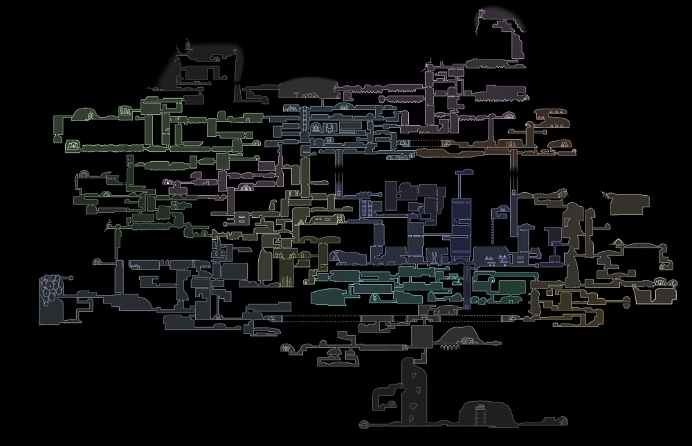
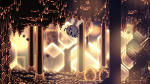
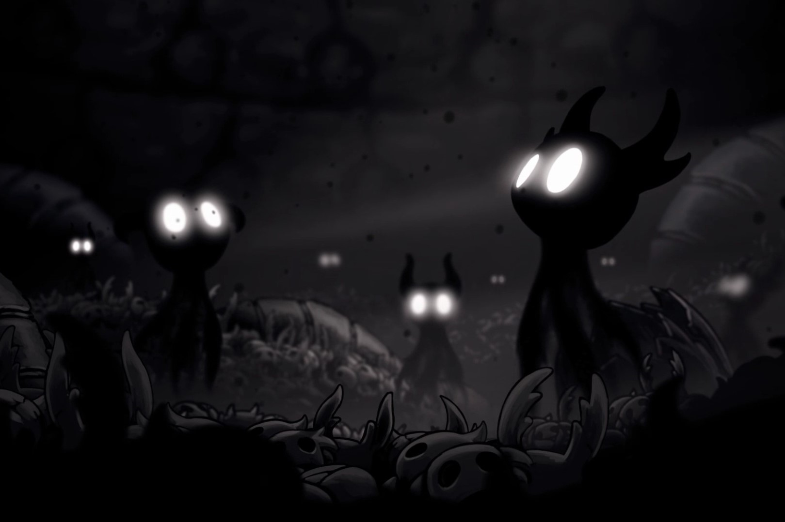
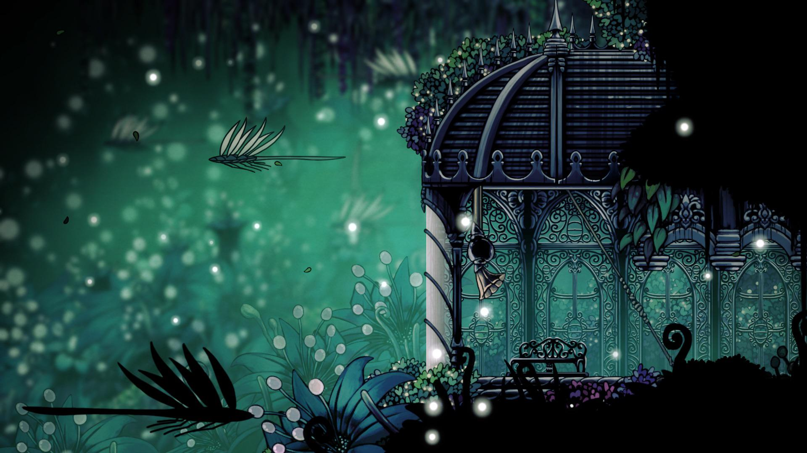
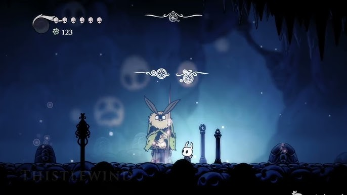

Zonas Secretas

A diferencia de las regiones principales, las **Zonas Secretas** requieren de una observación minuciosa. Paredes que vibran, suelos que crujen o techos ocultos por la cámara son las entradas a estos lugares. En esta sección analizamos los territorios que Team Cherry ocultó para los jugadores más persistentes.
La Colmena
Oculta tras una pared rompible en el Límite del Reino (cerca de la estación del tranvía). Es el hogar de una civilización de abejas que se aisló por completo del Rey Pálido.
Peligro: Las abejas son territoriales y atacarán en masa. Aquí enfrentarás al Caballero de la Colmena para obtener el amuleto Sangre de Colmena.


El Abismo
Ubicado debajo de la Cuenca Antigua. Solo se abre si posees la Marca del Rey. Es el lugar de origen de las vasijas y el hogar del Vacío puro.
- Capa Sombría · Chillido del Abismo · Corazón del Vacío
El Basurero (Junk Pit)
En una esquina olvidada de los Canales Reales, tras varias paredes rompibles, se encuentra este vertedero donde se halla la Buscadora de Dioses encadenada.

Usar el Aguijón Onírico en ella te transporta al Hogar de los Dioses, el área de desafíos finales del DLC Godmaster.
Jardines de la Reina
Un retiro real que fue consumido por la vegetación y la traición. Es el dominio del Señor de los Traidores y la ubicación del refugio de la Dama Blanca.
Es una de las zonas más difíciles de navegar debido a las espinas y las plataformas móviles.

Tierra de Tormentas
La zona más secreta y difícil de encontrar en todo el juego. Solo accesible tras completar los 4 primeros Panteones con todos los vínculos activados.
Aquí se revela el origen de los Buscadores de Dioses y su conexión con una civilización que adoraba el clima y el trueno.

Claro de los Espíritus
Ubicado en las Tierras de Reposo, oculto tras una barrera que solo la Vidente puede retirar cuando recolectas 200 de esencia. Es un cementerio sagrado donde descansan las almas de los mecenas del juego.